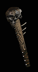

|

兇猛橡樹
木棒
Felloak
Club
|
單手傷害:
1 - 10
(變動) (平均傷害5)
等級需求: 3
耐久度: 24
武器基本速度: [-10]
+70-80% 增強傷害
(變動)
150% 對不死系生物傷害
增加 6-8 火焰傷害
擊退
閃電抵抗 +60%
火焰抵抗 +20%
|
|

堅硬的指甲
狼牙棒
Stoutnail
Spiked Club
|
單手傷害:
10 - 16
(平均傷害13)
等級需求: 5
耐久度: 36
武器基本速度: [0]
+100% 增強傷害
150% 對不死系生物傷害
+7 體力
攻擊者受到傷害 3-10
(變動)
法術傷害減少 2
|
|

壓碎的凸邊
釘頭錘
Crushflange
Mace
|
單手傷害:
4 - (15-16)
(變動) (平均傷害9)
等級需求: 9
力量需求: 27
耐久度: 60
武器基本速度: [0]
+50-60% 增強傷害
(變動)
150% 對不死系生物傷害
33% 造成壓碎性傷害機率
擊退
火焰抵抗 +50%
+15 力量
+2 照亮範圍
|
|

血昇
流星鎚
Bloodrise
Morning Star
|
單手傷害:
15 - 35
(平均傷害25)
等級需求: 15
力量需求: 36
耐久度: 72
武器基本速度: [10]
+120% 增強傷害
+50% 對不死系生物傷害
25% 撕開傷口機率
10% 增加攻擊速度
5% 偷取生命
50% 額外的攻擊準確率加成
+3 犧牲
(限聖騎士)
+2 照亮範圍
|
|

坦-杜-裡-嘎-將軍
連枷
The General's
Tan Do Li Ga
Flail
|
單手傷害:
2 - (56-58)
(變動) (平均傷害29)
等級需求: 21
力量需求: 41
敏捷需求: 35
耐久度: 30
武器基本速度: [-10]
+50-60% 增強傷害
(變動)
150% 對不死系生物傷害
增加 1-20 傷害
20% 增加攻擊速度
5% 偷取法力
減慢目標速度 50%
+25 防禦
|
|

鐵石
巨戰鐵鎚
Ironstone
War Hammer
|
單手傷害:
(38-47) - (58-72)
(變動) (平均傷害52)
等級需求: 27
力量需求: 53
耐久度: 55
武器基本速度: [20]
+100-150% 增強傷害
(變動)
150% 對不死系生物傷害
增加 1-10 閃電傷害
+100-150 攻擊準確率
(變動)
+10 力量
|
|

碎骨
大木棍
Bonesnap
Maul
|
雙手傷害:
(90-120) - (129-172)
(變動)
(平均傷害127)
等級需求: 24
力量需求: 69
耐久度: 60
武器基本速度: [10]
+200-300% 增強傷害
(變動)
50-200% 對不死系生物傷害
(變動)
40% 造成壓碎性打擊機率
冰冷抵抗 +30%
火焰抵抗 +30%
|
|

鐵製大槌
卓越巨棍
Steeldriver
Great Maul
|
雙手傷害:
(95-133) - (145-203)
(變動)
(平均傷害144)
等級需求: 29
力量需求: 50
耐久度: 60
武器基本速度: [20]
+150-250% 增強傷害
(變動)
150% 對不死系生物傷害
40% 增加攻擊速度
需求 -50%
減緩精力消耗 25% |